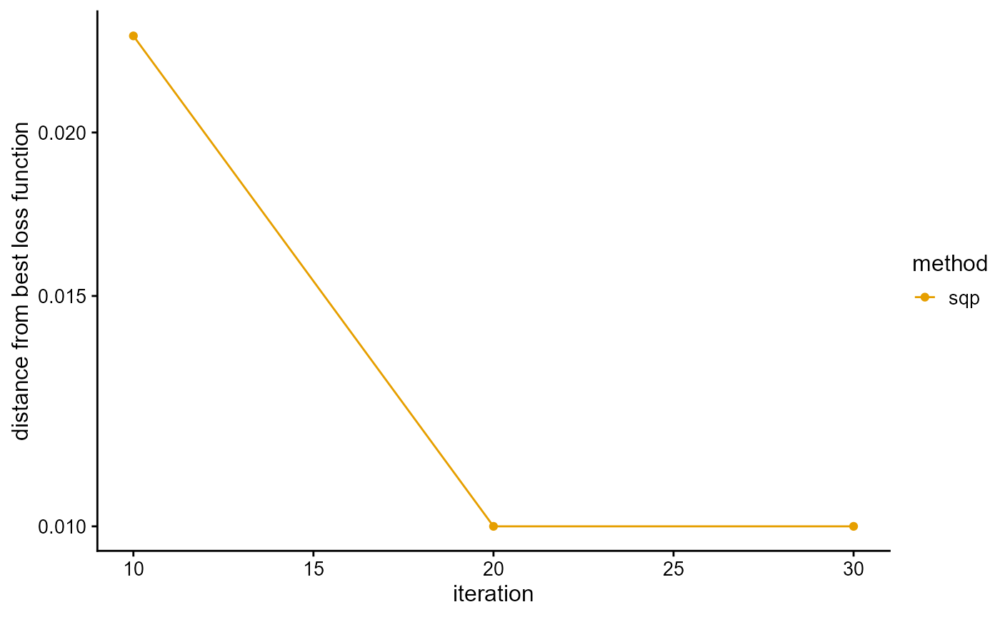
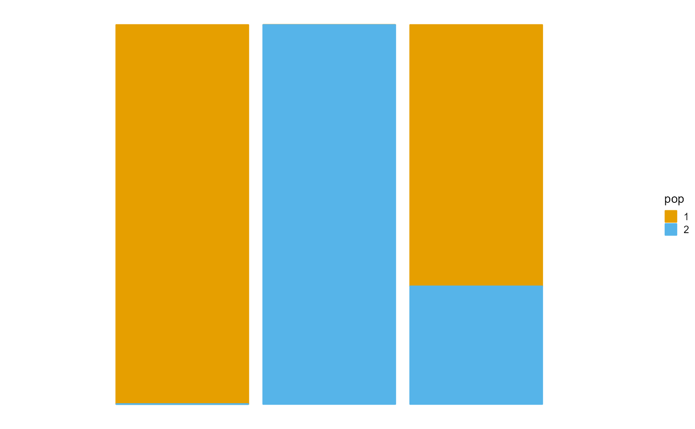

Models and Methods II: Fit PSD Model by SQP Algorithm
Jonathon Chow
2022-10-04
Source:vignettes/06_theory_sqp.Rmd
06_theory_sqp.RmdIntroduction
We use the sequential quadratic programming algorithm (SQP) to fit the PSD model (Alexander, Novembre, and Lange 2009).
PSD Model
The typical data set consists of genotypes at a large number \(J\) of single nucleotide polymorphisms (SNPs) from a large number \(I\) of unrelated individuals. These individuals are drawn from an admixed population with contributions from \(K\) postulated ancestral populations. Population \(k\) contributes a fraction \(p_{ik}\) of individual \(i\)’s genome. Note that \(\sum_{k=1}^Kp_{ik}=1\), and \(p_{ik}\geq 0\). Allele 1 at SNP \(j\) has frequency \(f_{kj}\) in population \(k\). Note that \(0\leq f_{kj}\leq 1\). As a matter of convention, one can choose allele 1 to be the minor allele and the alternative allele 2 to be the major allele. In our model, both the \(p_{ik}\) and the \(f_{kj}\) are unknown. We are primarily interested in estimating the \(p_{ik}\) to control for ancestry in an association study, but our approach also yields estimates of the \(f_{kj}\).
Let \((g_{ij}^1,g_{ij}^2)\) represents the genotype at marker \(j\) of person \(i\), where \(g_{ij}^a\) represent the observed number of copies of allele 1 at seat \(a\). Thus, \((g_{ij}^1,g_{ij}^2)\) equals \((1,1)\), \((1,0)\), \((0,1)\), or \((0,0)\) accordingly, as \(i\) has genotype 1/1, 1/2, 2/1, or 2/2 at marker \(j\).
Note that individuals are formed by the random union of gametes. This produces the binomial proportions \[P(g_{ij}^a=1)=\sum_{k=1}^Kp_{ik}f_{kj},\quad P(g_{ij}^a=0)=\sum_{k=1}^Kp_{ik}(1-f_{kj}),\quad a=1,2.\] Since individuals \(i\), SNPs \(j\), and seats \(a\) are considered independent, the log-likelihood of the entire sample is \[\mathcal{L}(G|P,F)=\sum_{i=1}^I\sum_{j=1}^J\sum_{a=1}^2\bigg\{g_{ij}^alog\Big[\sum_{k=1}^Kp_{ik}f_{kj}\Big]+(1-g_{ij}^a)log\Big[\sum_{k=1}^Kp_{ik}(1-f_{kj})\Big]\bigg\}\] up to an additive constant that does not enter into the maximization problem. Let \(g_{ij}=g_{ij}^1+g_{ij}^2\). So the log-likelihood can also be expressed as \[\mathcal{L}(G|P,F)=\sum_{i=1}^I\sum_{j=1}^J\bigg\{g_{ij}log\Big[\sum_{k=1}^Kp_{ik}f_{kj}\Big]+(2-g_{ij})log\Big[\sum_{k=1}^Kp_{ik}(1-f_{kj})\Big]\bigg\}.\] The parameter matrices \(P=\{p_{ik}\}\) and \(F=\{f_{kj}\}\) have dimensions \(I\times K\) and \(K\times J\), for a total of \(K(I+J)\) parameters.
Note that the log-likelihood is invariant under permutations of the labels of the ancestral populations. Thus, the log-likelihood has at least \(K!\) equivalent global maxima. In practice, this is a minor nuisance and does not affect the convergence of well-behaved algorithms. The constraints \(0\leq f_{kj}\leq 1\), \(p_{ik}\geq 0\), and \(\sum_{k=1}^Kp_{ik}=1\) are more significant hindrances to contriving a good optimization algorithm.
Quadratic Programming Problem and Active Set Method
General optimization theory
We consider an optimization problem in the standard form: \[ \begin{split} min & \quad f_0(x) \\ s.t. & \quad f_i(x)\leq 0,\quad i=1,\ldots,m \\ & \quad h_i(x)=0,\quad i=1,\ldots,p, \end{split} \] with variable \(x\in \mathbb{R}^n\). We define the \(\mathcal{L}\) as \[\mathcal{L}(x,\lambda,\nu)=f_0(x)+\sum_{i=1}^m\lambda_if_i(x)+\sum_{i=1}^p\nu_ih_(x).\] We refer to \(\lambda_i\) and \(\nu_i\) as the .
Let \(x^*\) and \((\lambda^*, \nu^*)\) be any primal and dual optimal points with zero duality gap (strong duality), then it follows the (KKT) conditions \[ \begin{split} f_i(x^*)\leq 0 & ,\quad i=1,\ldots,m \\ h_i(x^*)=0 & ,\quad i=1,\ldots,p \\ \lambda_i^*\geq 0 & ,\quad i=1,\ldots,m \\ \lambda_i^*f_i(x^*)=0 & ,\quad i=1,\ldots,m \\ \nabla f_0(x^*)+\sum_{i=0}^m\lambda_i^*\nabla f_i(x^*)+\sum_{i=1}^p\nu_i^*\nabla h_i(x^*)& . \end{split} \]
When the primal problem is convex, the KKT conditions are also sufficient for the points to be primal and dual optimal.
A fundamental property of convex optimization problems is that any locally optimal point is also (globally) optimal.
General linear constrained quadratic programming problem
We consider an quadratic programming problems with general linear constraints in the standard form: \[ \begin{aligned} min & \quad \frac{1}{2}x^TQx+c^Tx \\ s.t. & \quad a_i^Tx-b_i\leq 0,\quad i\in\mathcal{I}=\{1,\ldots,m\} \\ & \quad a_i^Tx-b_i=0,\quad i\in\mathcal{E}=\{m+1,\ldots,m+l\}, \end{aligned} \quad\quad(QP) \] where \(Q\) is a positive semidefinite matrix. So this is a convex optimization problem. We do not consider the case where Q is an indefinite matrix, in fact this is an NP-hard problem.
We give the fundamental theorem for active sets. We consider the following equality constrained quadratic programming problem \[ \begin{aligned} min & \quad \frac{1}{2}x^TQx+c^Tx \\ s.t. & \quad a_i^Tx-b_i\leq 0,\quad i\in\mathcal{I}(x^*) \\ & \quad a_i^Tx-b_i=0,\quad i\in\mathcal{E}, \end{aligned} \quad\quad(QP^*) \] where \(\mathcal{I}(x^*)=\{i|a_i^Tx^*=b_i,i\in\mathcal{I}\}\).
If \(x^*\) is an optimal solution to \((QP)\) then \(x^*\) is also an optimal solution to \((QP^*)\). In fact, it is obtained by using the equivalence between the optimal solution and the KKT condition of convex optimization problems. This is geometrically intuitive, we use the contour map and notice that the constraints are convex polyhedra, so the optimal value can only be found at the boundary.
Conversely, if \(x^*\) is a feasible solution of \((QP)\) and an optimal solution of \((QP^*)\), and its corresponding \(\lambda_i^*\) satisfies \(\lambda_i^*\geq0\), for \(i\in\mathcal{I}(x^*)\), then \(x^*\) is the optimal solution of \((QP)\). In fact, it is obtained by using KKT conditions or complementary relaxation.
Using the fundamental theorem for active sets, we transform the inequality constrained quadratic programming problem into a finite number of equality constrained quadratic programming problems, which is guaranteed by . The quadratic programming problem with equality constraints can be solved easily.
Equality constrained quadratic programming problem
We consider an quadratic programming problems with equality constraints in the standard form: \[ \begin{aligned} min & \quad \frac{1}{2}x^TQx+c^Tx \\ s.t. & \quad Ax=b. \end{aligned} \]
There are many methods to solve equality constrained quadratic programming problem (Nocedal and Wright 2006), such as direct elimination method, Schur matrix factorization method, generalized elimination method, iterative method and so on.
For the full rank matrix \(A\) and the positive definite matrix \(Q\), these methods are all feasible. However, we may encounter the case where \(Q\) is positive semidefinite in practice, then we solve this problem using Lagrange dual and QR factorization. Note that for solving PSD model using SQP algorithm, the constraints are compatible, and there are no negative infinity cases. Hence, by the property of convex optimization, there must be a solution to the problem. Since we are dealing with small matrices, there is no need to use some sparse matrix tricks.
We apply the KKT condition and get the equivalent statement \[ \begin{bmatrix} Q&A^T\\A&0 \end{bmatrix} \begin{bmatrix} x^*\\\lambda^* \end{bmatrix}= \begin{bmatrix} -c\\b \end{bmatrix}. \] Then, we solved this system of linear equations using QR factorization.
Inequality constrained quadratic programming problem
For inequality constrained quadratic programming problem, there are many methods to solve it, the most typical ones are active set method (Goldfarb and Idnani 1983) and interior point method (Boyd and Vandenberghe 2004), which converge quickly. We can also use alternating direction method of multipliers (Boyd et al. 2011), such as Dykstra, which have a slower convergence rate. Specific algorithms can be derived for special constraints or sparse matrices, such as OSQP and LowRankQP.
For our goal, we need to solve thousands of small quadratic programming problems, so we do not require high convergence speed of the algorithm and do not need to consider the case of sparse matrices. We use the active set method, which works well for our problem. We also tried the Dykstra algorithm, which performed less well. At the same time, for this specific problem, compared with the general linear constrained quadratic programming problem, there is a certain convenience in algorithm implementation.
Now, we derive the active set method.
Sequential Quadratic Programming Algorithm
One of the most effective methods for nonlinearly constrained optimization generates steps by solving quadratic subproblems. This sequential quadratic programming (SQP) approach can be used both in line search and trust-region frameworks, and is appropriate for small or large problems.
First, consider the problem of equality constraints \[ \begin{split} min & \quad f(x) \\ s.t. & \quad c(x)=0, \end{split} \] where\(c(x)=\big[c_1(x),\ldots,c_m(x)\big]^T\).
The Lagrangian function for this problem is \(\mathcal{L}(x.\lambda)=f(x)-\lambda^Tc(x)\). We use \(A(x)\) to denote the Jacobian matrix of the constraints, that \[A(x)^T=[\nabla c_1(x),\ldots,\nabla c_m(x)].\] The first-order (KKT) conditions of the equlity-constrained problem can be written as a system of \(n+m\) equations in \(n+m\) unknowns \(x\) and \(\lambda\): \[F(x,\lambda)=\begin{bmatrix}\nabla f(x)-A(x)^T\lambda\\c(x)\end{bmatrix}=0.\] Any solution \((x^*,\lambda^*)\) of the equality-constrained problem for which \(A(x^*)\) has full rank satisfies the above equations. We can solve the nonlinear equations by using Newton’s method.
The Jacobian of \(F(x,\lambda)\) is \[F'(x,\lambda)=\begin{bmatrix}\nabla_{xx}^2\mathcal{L}(x,\lambda)&-A(x)^T\\A(x)&0\end{bmatrix}.\] The Newton step from the iterate \((x_k,\lambda_k)\) is thus given by \[\begin{bmatrix}x_{k+1}\\\lambda_{k+1}\end{bmatrix}=\begin{bmatrix}x_k\\\lambda_k\end{bmatrix}+\begin{bmatrix}p_k\\p_{\lambda}\end{bmatrix},\] where \(p_k\) and \(p_{\lambda}\) solve the Newton-KKT system \[\begin{bmatrix}\nabla_{xx}^2\mathcal{L}_k&-A_k^T\\A_k&0\end{bmatrix}\begin{bmatrix}p_k\\p_{\lambda}\end{bmatrix}=\begin{bmatrix}-\nabla f_k+A_k^T\lambda_k\\-c_k\end{bmatrix}.\] This Newton iteration is well defined when the KKT matrix is nonsingular.
There is an alternative way to view the iteration above. Suppose that at the iterate \((x_k,\lambda_k)\) we model problem using the quadratic program \[\begin{split} \mathop{min}\limits_p & \quad f_(x)_k+\nabla f_k^Tp+\frac{1}{2}p^T\nabla_{xx}^2\mathcal{L}_kp \\ s.t. & \quad A_kp+c_k=0. \end{split}\] If the original problem is true, this problem has a unique solution \((p_k,l_k)\) that satisfies \[\nabla_{xx}^2\mathcal{L}_kp_k+\nabla f_k-A_k^Tl_k=0,\] \[A_kp_k+c_k=0.\] The vectors \(p_k\) and \(l_k\) can be identified with the solution of the Newton equations above as well. In fact, if we subtract \(A_k^T\lambda_k\) from both sides of the first equation in the Newton equations above, we obtain \[\begin{bmatrix}\nabla_{xx}^2\mathcal{L}_k&-A_k^T\\A_k&0\end{bmatrix}\begin{bmatrix}p_k\\\lambda_{k+1}\end{bmatrix}=\begin{bmatrix}-\nabla \lambda_k\\-c_k\end{bmatrix}.\] Hence, by nonsingularity of the coefficient matrix, we have that \(\lambda_{k+1}=l_k\) and that \(p_k\) solves the quadratic program and the Newton equations.
The new iterate \(x_{k+1},\lambda_{k+1}\) can therefore be defined either as the solution of the quadratic program or as the iterate generated by Newton’s method applied to the optimality conditions of the problem. Both viewpoints are useful. The Newton point of view facilitates the analysis, whereas the SQP framework enables us to derive practical algorithms and to extend the technique to the inequality-constrained case.
We now state the SQP method in its simplest form. First, choose an initial pair \((x_0,\lambda_0)\) and set \(k=0\). Then, evaluate \(f_k\), \(\nabla f_k\), \(\nabla_{xx}^2\mathcal{L}_k\), and \(A_k\). Next, solve the quadratic program to obtain \(p_k\), \(l_k\). Finally, set \(x_{k+1}=x_k+p_k\) and \(\lambda_{k+1}=\lambda_k\). Repeat the process until a convergence test is satisfied.
For the inequality-constrained case, we can use the active set method.
Fit PSD Model by SQP Algorithm
Convexity of the optimization problem
Our objective is to solve the following optimization problem \[\begin{split} \mathop{max}\limits_{P,F} & \quad \mathcal{L}(G|P^{(t)},F^{(t)}) \\ s.t. & \quad \sum_{k=1}^Kp_{ik}=1,\quad i=1,\ldots,I \\ & \quad 0\leq p_{ik}\leq 1,\quad i=1,\ldots,I,\quad k=1,\ldots,K\\ & \quad 0\leq f_{kj}\leq 1,\quad j=1,\ldots,J,\quad k=1,\ldots,K. \end{split}\]
We can easily translate this optimization problem into a standard form. This optimization problem is convex in P for F fixed and in F for P fixed. In fact, by the definition of a convex optimization problem, we only need to show that the objective function is convex, the inequality constraint function is convex, and the equality constraint function is affine. Note that these three conditions naturally lead to the fact that the feasible set is convex. The last two conditions are clearly satisfied. We just have to prove the fact that the negative log-likelihood \(-\mathcal{L}(G|P,F)\) is convex in P for F fixed and in F for P fixed.
We exploit two properties of convex functions. First, a nonnegative weighted sum of convex functions \(f=\omega_1f_1+\cdots+\omega_mf_m\) is convex. Second, the convexity of the composite affine map is preserved. Specifically, suppose \(f:\mathbb{R}^n\rightarrow\mathbb{R}\), \(A\in\mathbb{R}^{n\times m}\), and \(b\in\mathbb{R}^n\). Define \(g:\mathbb{R}^m\rightarrow\mathbb{R}\) by \(g(x)=f(Ax+b)\), wuth \(\textbf{dom}(g)=\{x|Ax+b\in\textbf{dom}(f)\}\). Then, if \(f\) is convex, so is \(g\).
Using the first property, we simply state that \(-log\Big[\sum_{k=1}^Kp_{ik}f_{kj}\Big]\) is convex, \(-log\Big[\sum_{k=1}^Kp_{ik}(1-f_{kj})\Big]\) is convex can be proved similarly. Using the second property, and concavity of the \(log\) function, this is obvious.
Convexity makes block iteration amenable to convex optimization techniques.
Derivation of the algorithm
We fix \(P\) to optimize \(F\), then fix \(F\) to optimize \(P\), and so on. We use the method at each step, that is, the second-order Taylor expansion approximation \[f(x)=f(x^{(t)})+\nabla f(x^{(t)})(x-x^{(t)})+\frac{1}{2}(x-x^{(t)})^T\nabla^2f(x^{(t)})(x-x^{(t)})\] is used to transform the original problem into a constrained quadratic programming problem. Let\(\Delta x^{(t)}=x-x^{(t)}\).
Update \(P\). We calculate the first and second partial derivatives (Hessian matrix) of \(P\) under the condition that \(F\) is fixed \[\frac{\partial\mathcal{L}}{\partial p_{ik}}=\sum_{j=1}^J\bigg[\frac{g_{ij}f_{kj}}{\sum_{k=1}^Kp_{ik}f_{kj}}+\frac{(2-g_{ij})(1-f_{kj})}{\sum_{k=1}^Kp_{ik}(1-f_{kj})}\bigg],\] \[\frac{\partial^2\mathcal{L}}{\partial p_{ik}\partial p_{il}}=-\sum_{j=1}^J\bigg[\frac{g_{ij}f_{kj}f_{lj}}{(\sum_{k=1}^Kp_{ik}f_{kj})^2}+\frac{(2-g_{ij})(1-f_{kj})(1-f_{lj})}{(\sum_{k=1}^Kp_{ik}(1-f_{kj}))^2}\bigg].\] We then solve the quadratic programming problem \[\begin{split} \mathop{min}\limits_{\Delta P_i} & \quad \frac{1}{2}(\Delta P_i)^T\Big[-\nabla^2_{P_i}\mathcal{L}(G|P^{(t)},F^{(t)})\Big]\Delta P_i-\Big[\nabla_{P_i}\mathcal{L}(G|P^{(t)},F^{(t)})\Big]^T\Delta P_i-\mathcal{L}(G|P^{(t)},F^{(t)}) \\ s.t. & \quad 1^T\Delta P_i=0 \\ & \quad 1-P_i^{(t)}\geq\Delta P_i\geq-P_i^{(t)} \end{split}\] using the active set method. Thus, \(P_i^{(t+1)}=P_i^{(t)}+\Delta P_i\).
Update \(F\). We calculate the first and second partial derivatives (Hessian matrix) of \(F\) under the condition that \(P\) is fixed \[\frac{\partial\mathcal{L}}{\partial f_{kj}}=\sum_{i=1}^I\bigg[\frac{g_{ij}p_{ik}}{\sum_{k=1}^Kp_{ik}f_{kj}}-\frac{(2-g_{ij})p_{ik}}{\sum_{k=1}^Kp_{ik}(1-f_{kj})}\bigg],\] \[\frac{\partial^2\mathcal{L}}{\partial f_{kj}\partial f_{lj}}=-\sum_{i=1}^I\bigg[\frac{g_{ij}p_{ik}p_{il}}{(\sum_{k=1}^Kp_{ik}f_{kj})^2}+\frac{(2-g_{ij})p_{ik}p_{il}}{(\sum_{k=1}^Kp_{ik}(1-f_{kj}))^2}\bigg].\] We then solve the quadratic programming problem \[\begin{split} \mathop{min}\limits_{\Delta F_j} & \quad \frac{1}{2}(\Delta F_j)^T\Big[-\nabla^2_{F_j}\mathcal{L}(G|P^{(t)},F^{(t)})\Big]\Delta F_j-\Big[\nabla_{F_j}\mathcal{L}(G|P^{(t)},F^{(t)})\Big]^T\Delta F_j-\mathcal{L}(G|P^{(t)},F^{(t)}) \\ s.t. & \quad 1-F_j^{(t)}\geq\Delta F_j\geq-F_j^{(t)} \end{split}\] using the active set method. Thus, \(F_j^{(t+1)}=F_j^{(t)}+\Delta F_j\).
In conclusion, We update \(P\) and \(F\) block by block alternately, until the log-likelihood of incomplete data \(\mathcal{L}(G|P,F)\) converges. This is the SQP algorithm for PSD model.
Acceleration
We can speed up the SQP algorithm in three ways. First, We write the core parameter update part in C++. Second, We can choose different methods to solve quadratic programming problems and more specifically solve large-scale systems of small linear equations. Third, we can use quasi Newtonian method to accelerate the algorithm, The effect of this method is remarkable.
Algorithm Implementation
Select a suitable QR decomposition of the Eigen library (Guennebaud et al. 2022), The speed and accuracy are compared in the following table.
| Method | Requirements | Small.Scale.Speed | Large.scale.Speed | Accuracy |
|---|---|---|---|---|
partial PivLu() |
Invertible | ++ |
++ |
+ |
full PivLu() |
None | - |
-- |
+++ |
householderQr() |
None | ++ |
++ |
+ |
colPiv HouseholderQr() |
None | + |
- |
+++ |
fullPiv HouseholderQr() |
None | - |
-- |
+++ |
complete Orthogonal Decomposition() |
None | + |
- |
+++ |
llt() |
Positive definite | +++ |
+++ |
+ |
ldlt() |
Positive or negative semidefinite | +++ |
+ |
++ |
bdcSvd() |
None | - |
- |
+++ |
jacobiSvd() |
None | - |
--- |
+++ |
We present the implementation of SQP algorithm in R package
AwesomePackage. You can fit the PSD model using the SQP algorithm using
the function psd_fit_sqp. At the same time, you can use
plot_loss to see changes in log-likelihood and
plot_structure to plot structure.
Here is an example.
library(AwesomePackage)
G <- matrix(c(0,0,1, 0,2,1, 1,0,1, 0,1,0, 1,0,0), 3, 5)
result <- psd_fit_sqp(G, 2, 1e-5, 50, 10)
result## $P
## [,1] [,2]
## [1,] 0.999999999 0.000000001
## [2,] 0.000000001 0.999999999
## [3,] 0.689179272 0.310820728
##
## $F
## [,1] [,2] [,3] [,4] [,5]
## [1,] 0.276578102 1e-09 0.573747398 0.000000001 0.311700456
## [2,] 0.000000001 1e+00 0.000000001 0.413493316 0.000000001
##
## $Loss
## [1] -0.7211319 -0.7074246 -0.7074246
##
## $Iterations
## [1] 30
P <- result$P
plot_structure(P)
See AwesomePackage for details.